DrawSplat Studio
Games for classroom breaks, puzzles, and quick play.
All DrawSplat Games open as standalone browser pages.
Games
All DrawSplat Games
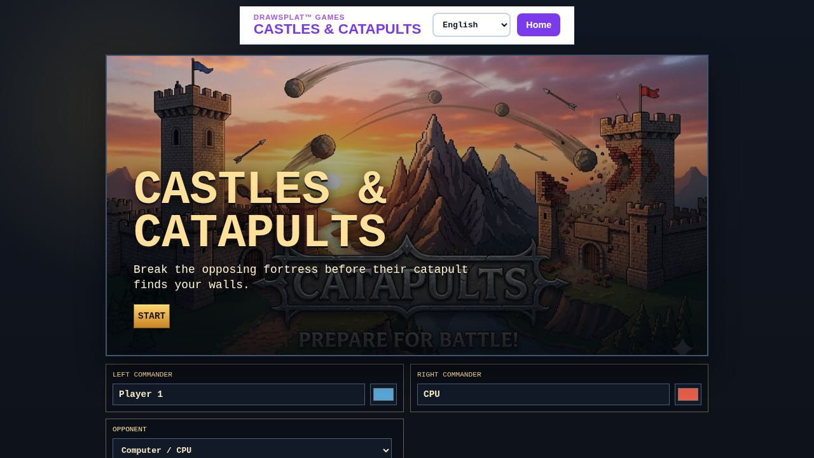
Castles & CatapultsTwo-player castle siege with munitions, wind, and toppled keeps.
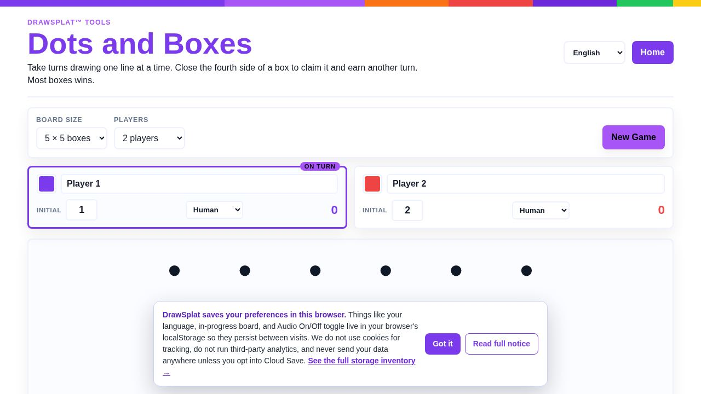
Dots and BoxesClassic box-claiming game for CPU or pass-and-play.
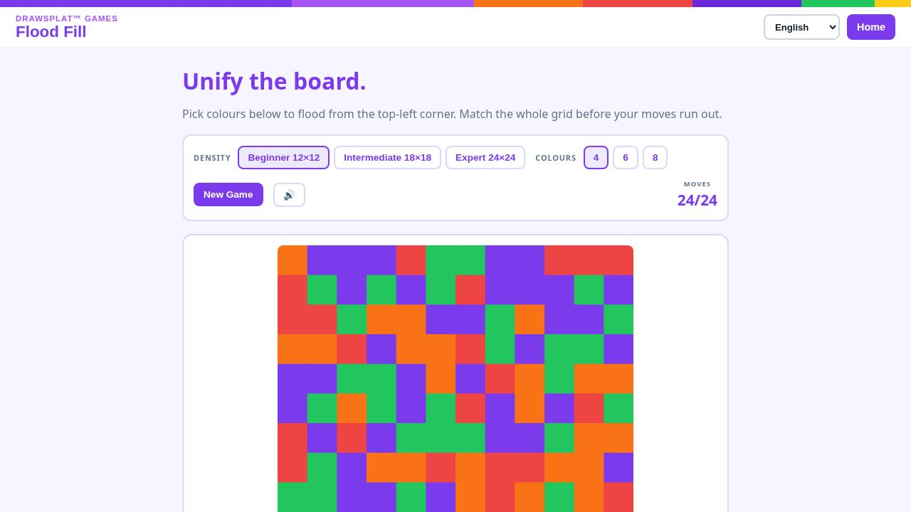
Flood FillMerge colors from the corner until the whole board matches.
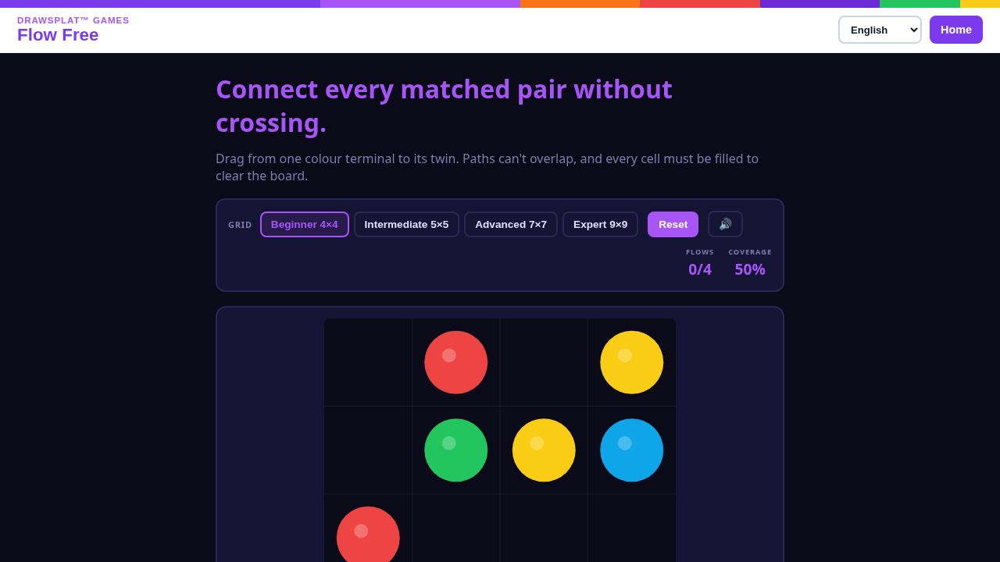
Flow FreeConnect matched terminals with non-crossing paths.
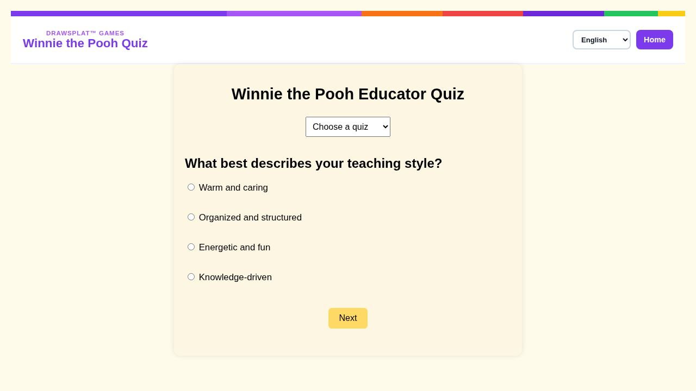
Fun QuizPlay character-trivia quiz packs.
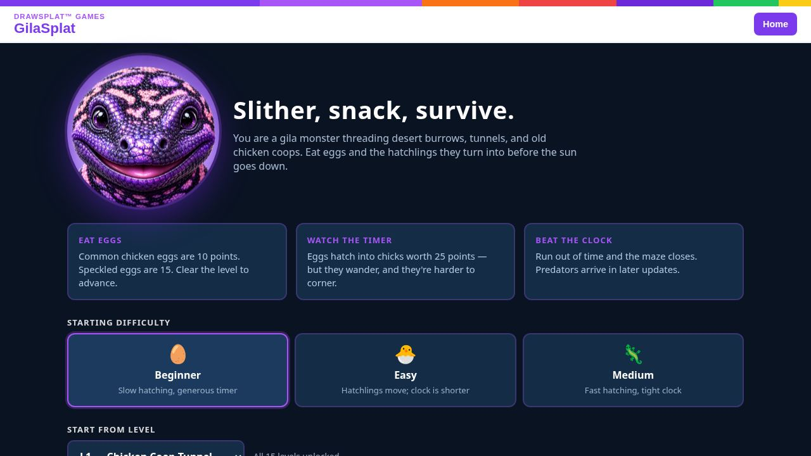
GilaSplatRetro desert-burrow arcade with hand-illustrated maze levels.
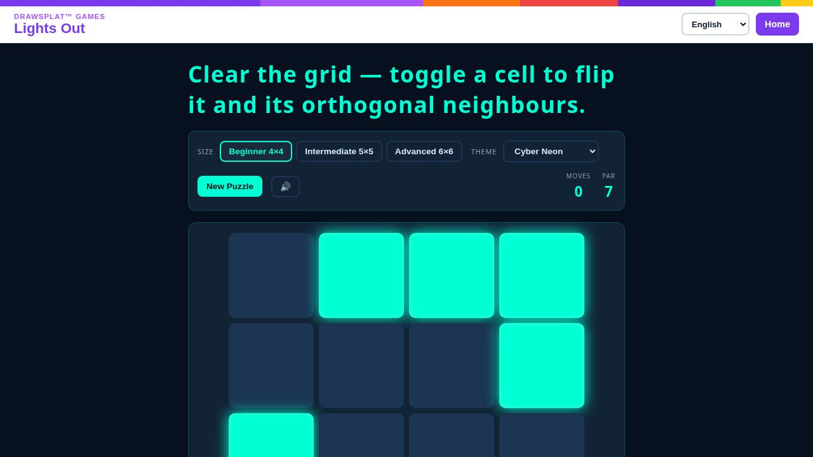
Lights OutToggle cells and neighbors to clear the grid.
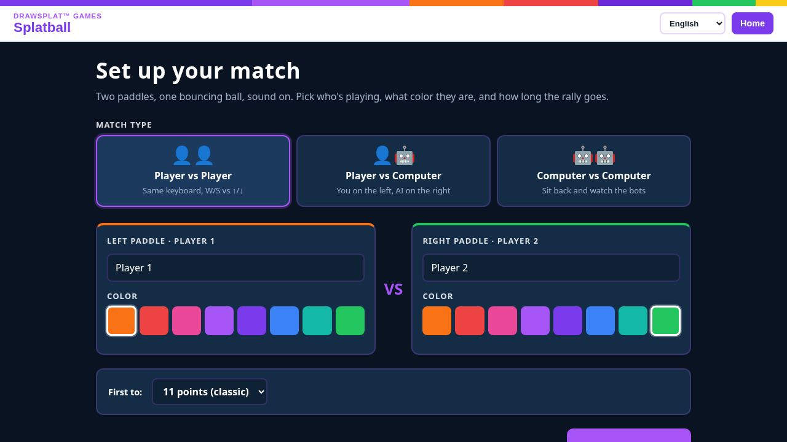
SplatballPaddle-rally arcade with player, computer, and demo modes.
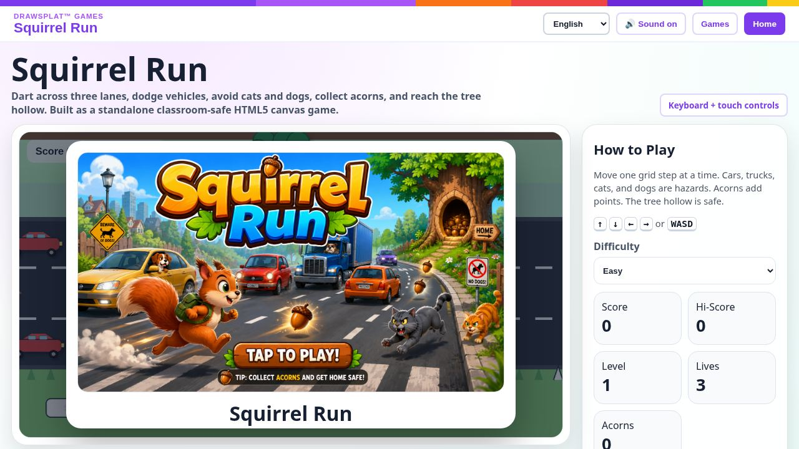
Squirrel RunDodge traffic, collect acorns, and reach the tree hollow.
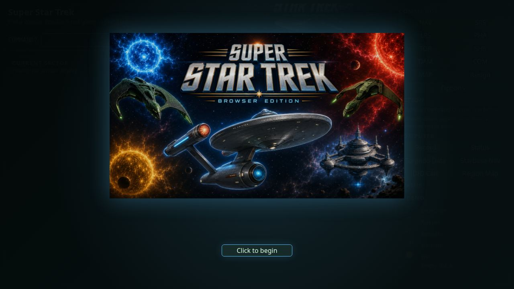
Super Star TrekCommand the Enterprise in a browser edition of the classic quadrant strategy game.
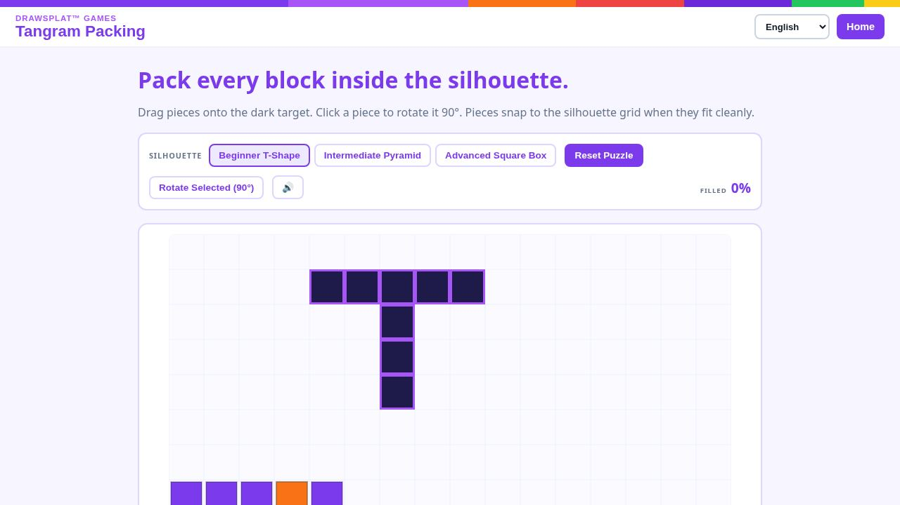
Tangram PackingDrag and rotate blocks to fill silhouettes without overlap.
Typing GamesChoose four typing adventures: pets, spy driving, word-board duels, and stories.
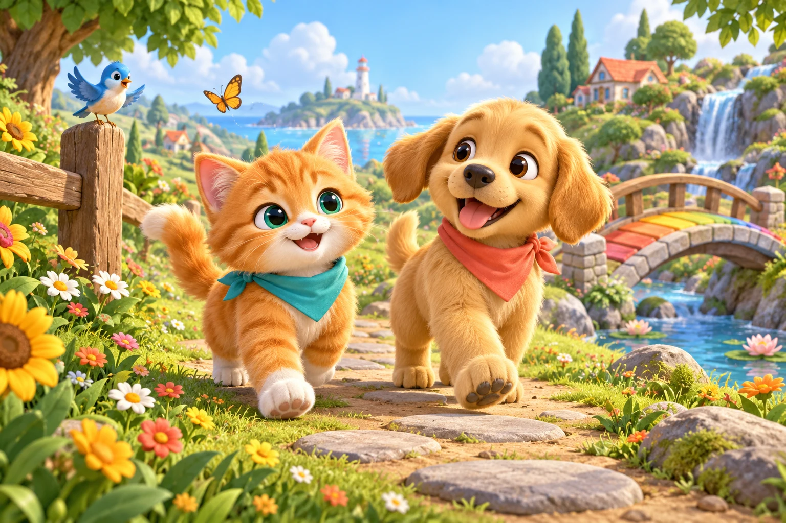
Paws & Keys AdventureA kitten and puppy typing adventure for ages 4–9 with twelve gentle trails.
Cipher ChaseSteer an overhead spy car, protect civilians, and type words to clear rivals.
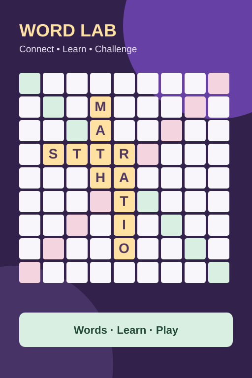
Wordfall ReactorConnect everyday words or TEKS vocabulary on a letter-tile board against the computer.
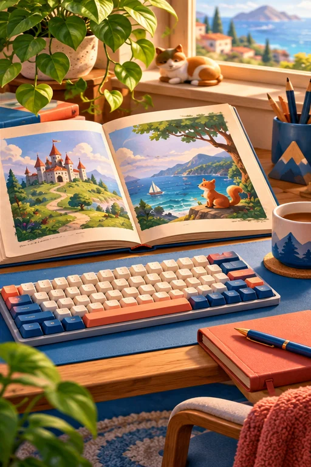
Story SprintPractice passages and track speed and accuracy; import your own classroom text.
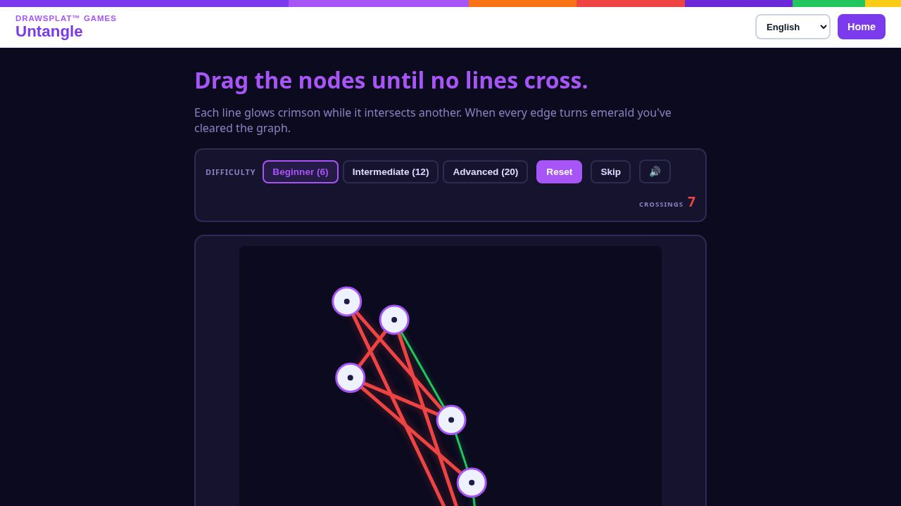
UntangleMove graph nodes until no edges cross.